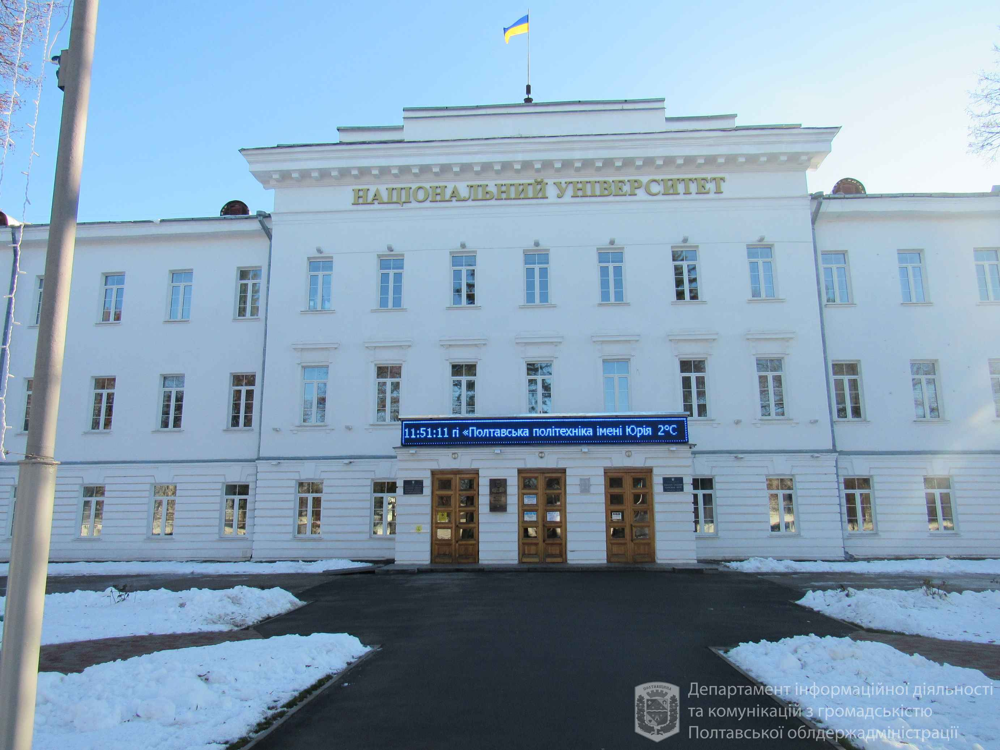

Полтава - це місто в Україні, адміністративний центр Полтавської області. Місто розташоване на берегах річки Ворскла та має багатий культурний спадок та історію.
Місто Полтава відоме своєю багатою історією. Найвідомішою подією в історії міста є Полтавська битва 1709 року, де відбувся важливий конфлікт між шведською та російською арміями.
Полтавський національний технічний університет імені Юрія Кондратюка
Полтавський національний педагогічний університет імені В.Г. Короленка